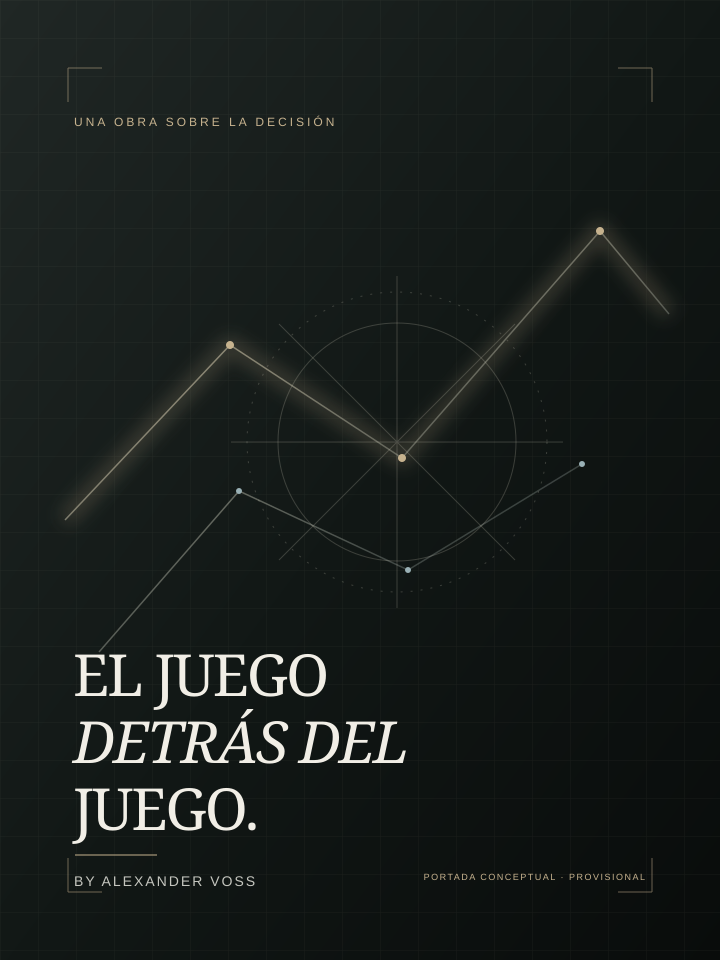

La oportunidad.
Dos empresarios conocidos que daban acción. Ciegas 5/10. Daniel atento, observando la mesa y sus oportunidades.
LA MENTALIDAD DEL JUGADOR · MÁS ALLÁ DE LAS CARTAS
Saber qué hacer no significa poder ejecutarlo.Puedes dominar una estrategia y perder tu ventaja por tilt, fatiga, mala gestión de banca o por no reconocer cuándo una partida dejó de convenirte. Este libro aborda la psicología, la disciplina y el criterio que exige jugar con mentalidad profesional.

LA PARTIDA QUE CAMBIÓ
Daniel había recibido una invitación para una partida privada de ciegas 5/10. Esa noche estarían dos empresarios con los que ya había compartido mesa. Eran jugadores que disfrutaban la acción: participaban en muchos botes, perseguían proyectos y pagaban apuestas con manos que otros habrían abandonado. Daniel conocía su estilo y creía tener una ventaja frente a ellos.
9:20 PM Cuando Daniel ocupó su asiento, todo parecía indicar que había elegido bien. Lo que todavía no sabía era cuánto podían cambiar las condiciones de aquella partida en unas pocas horas.
Dos empresarios conocidos que daban acción. Ciegas 5/10. Daniel atento, observando la mesa y sus oportunidades.
11:30 PM. Primero se marchó uno. Poco después, el otro. Nuevos jugadores ocuparon sus asientos.
«Nadie anunció que la partida acababa de cambiar.»Otros rivales. Straddle de 20. El juego había aumentado de tamaño. Daniel seguía sin cenar, tomando café y empezaba a perder atención.
Daniel no había olvidado cómo jugar al póker. Conservaba su experiencia y sus conocimientos. Pero se enfrentaba a otros rivales, con apuestas mayores y menos atención que al comienzo.
Había evaluado dónde sentarse.
Lo que no hizo fue volver a evaluar por qué seguía allí.
¿Cuántas veces has seguido jugando una partida que ya no era la que elegiste?
Saber jugar permite reconocer una oportunidad. Tener mentalidad profesional también exige reconocer cuándo ha cambiado.
EL JUGADOR TAMBIÉN ES PARTE DE LA ESTRATEGIA
El póker exige más que saber qué acción tiene valor. Exige poder tomarla con claridad después de perder, con cansancio, frente al ego y cuando el dinero importa. Es posible conocer la respuesta técnica y actuar por motivos que no aparecen en ningún rango.
Este libro estudia esa distancia: cómo identificar el deterioro, interpretar los resultados sin engañarte, mantener límites y saber cuándo no jugar. No es una promesa de ganar; es una forma más rigurosa de entender lo que significa ser jugador.
Selecciona una situación. No estás resolviendo una mano: estás examinando una decisión que puede condicionar toda la sesión.
Una mesa favorable no basta si empiezas a olvidar tamaños, perder el hilo de las manos o jugar en automático. El problema no es desconocer la estrategia; es que ya no estás utilizando todo lo que sabes.
¿Qué señales concretas te harían interrumpir la sesión, aunque todavía hubiera dinero por ganar?
Ejemplos conceptuales basados en los temas del manuscrito; no constituyen un diagnóstico, un test de habilidad ni una recomendación de seguir apostando.
SEIS PROBLEMAS QUE NO RESUELVE APRENDER UNA JUGADA MÁS
El error visible ocurre en una apuesta. Su origen puede estar una hora antes, en una mala noche de sueño, en una pérdida que no has terminado de aceptar o en una decisión financiera que no debiste asumir. Estos ejemplos muestran lo que realmente estudia el libro.
CAPÍTULO 06 · LAS FORMAS SILENCIOSAS DEL TILT
Sergio terminó una sesión perdedora orgulloso de su tranquilidad. No discutió, no golpeó la mesa ni hizo recompras impulsivas. Al revisar al día siguiente descubrió que había evitado apuestas de valor, defendido manos casi sin pensar y justificado un farol con conceptos que no respondían a la pregunta decisiva.
El tilt no siempre es rabia. También puede manifestarse como pasividad, automatismo, agresión dirigida a un rival o razonamientos sofisticados inventados después de actuar. Los costos más difíciles de reconocer son los que no aparecen como un gran error en el historial.
Este capítulo distingue problemas de conocimiento, atención y ejecución emocional. Porque estudiar más no resuelve una decisión que ya sabías tomar, pero dejaste de poder ejecutar en ese momento.
¿Cuál fue la última decisión que evitaste, no porque fuera incorrecta, sino porque ya no querías afrontar sus consecuencias?
CAPÍTULO 04 · EL ESTADO EN QUE SE JUEGA
Elena abrió cuatro mesas después de un día de trabajo. Se sentía bien y reconocía los spots. Pero confundió una secuencia de acciones entre ventanas y descubrió tarde que había supuesto mal el stack de un rival. No estaba alterada: estaba perdiendo precisión.
Dormir poco, sostener demasiadas decisiones, saltarse comidas o prolongar una partida pueden deteriorar la atención antes de que aparezca una señal emocional clara. La pregunta no es si todavía eres capaz de explicar una mano descansado, sino si estás registrando la información necesaria ahora.
El libro examina cómo preparar una sesión, detectar señales tempranas de deterioro y diferenciar una pausa útil de la necesidad de cerrar. Una mesa atractiva no recupera por sí sola tu concentración.
¿En qué momento de una sesión empiezas a dejar de notar detalles que al comienzo te resultaban evidentes?
CAPÍTULO 07 · CUANDO LOS RESULTADOS DEJAN DE ORIENTAR
Paula miró su gráfica y pensó en una explicación: estaba corriendo mal. Había perdido all-ins importantes. Pero en el mismo período también cambió de horario, encontró rivales distintos y abrió más mesas al final de las sesiones.
La varianza puede ocultar una buena estrategia durante mucho tiempo. También puede convertirse en una excusa para no revisar lo que sí cambió. Una línea de all-in EV informa sobre ciertos resultados, no certifica tu nivel ni explica toda la caída. Y una racha ganadora puede recompensar decisiones débiles hasta convertirlas en costumbre.
Este capítulo enseña a separar azar, condiciones de juego y calidad de ejecución sin convertir cada muestra en una sentencia sobre tu talento.
Si mañana tu gráfica cambiara de dirección, ¿qué creencias sobre tu nivel cambiarían sin que hubiera cambiado tu juego?
CAPÍTULO 09 · EL DINERO QUE REALMENTE ESTÁ EN JUEGO
Raúl decía tener veinte mil de banca. Pero parte estaba reservada para gastos y otra parte seguía pendiente de cobro. Para asumir una noche difícil tenía mucho menos capital disponible de lo que mostraba su hoja de resultados.
Gestionar banca no consiste en memorizar una cantidad universal de buy-ins. Exige separar dinero de vida, ganancias pendientes, exposición real, recompras, profundidad, crédito y necesidades económicas que no desaparecen cuando empieza una sesión.
El capítulo muestra por qué la estabilidad financiera también afecta a la ejecución. No puedes pedirte indiferencia ante una pérdida si estás apostando dinero que necesitas para vivir.
Si hoy perdieras lo que tienes pensado arriesgar, ¿qué obligación fuera del póker quedaría comprometida?
CAPÍTULO 10 · LAS PARTIDAS PRIVADAS
Fernando recibió una invitación atractiva. Antes de comprar fichas quiso saber cómo se cobraba la comisión y quién respondía por el dinero ganado. Las respuestas no estaban claras. El nivel de los jugadores era solo una parte de la decisión.
Una privada puede parecer rentable y esconder costos, riesgos de liquidación, acuerdos de crédito, condiciones cambiantes o presión para permanecer. Incluso sin que exista ninguna irregularidad, aceptar reglas imprecisas cambia la exposición que estás asumiendo.
El capítulo recorre la elección de partidas, las condiciones de entrada y salida, los límites de confianza y las señales que justifican no participar. Saber levantarte también forma parte de jugar bien.
¿Conoces las condiciones de cobro de tu próxima partida tan bien como conoces sus ciegas?
CAPÍTULO 11 · LA INTEGRIDAD DEL JUEGO ONLINE
En online, decisiones inusuales pueden despertar dudas sobre bots, asistencia en tiempo real o colaboración entre cuentas. Una sesión extraña no demuestra ninguna de esas conductas. Tampoco estás obligado a ignorar riesgos porque aún no puedas probarlos.
El manuscrito diferencia señales, hipótesis y hechos documentables. Examina cómo conservar historiales y observaciones por vías permitidas, qué solo puede investigar el operador y por qué no es responsable convertir una sospecha en una acusación pública.
La dimensión profesional incluye elegir entornos confiables y saber limitar la exposición cuando faltan garantías suficientes, sin confundir precaución con paranoia.
¿Qué sabes realmente sobre una anomalía, qué supones y qué necesitaría investigar la plataforma?
UN EJEMPLO SOBRE MATEMÁTICA Y SUPOSICIONES · CAPÍTULO 03
Supón que llegas al river con una mano que solo gana si el rival está faroleando. En el bote hay 300 y el rival apuesta 200. Las matemáticas indican que necesitas ganar al menos el 28,57 % de las veces para pagar. Pero la cuenta no sabe cuánto farolea esa persona. Si casi nunca lo hace en esta situación, el call puede ser malo por muy correcta que sea la fórmula.
Sin empates, subidas ni rake adicional. No representa una mano ni una salida de solver.
PRUEBA DISTINTAS HIPÓTESIS, NO SOLUCIONES GTO
Mueve el control: cambia únicamente la frecuencia de faroles que supones. El bote y la apuesta no cambian.
EV = p × 500 − (1 − p) × 200El fold tiene EV = 0 desde este punto.Si el rival realmente nunca farolea en este punto, pagar con un bluff catcher puro pierde dinero en promedio. Pero no haber visto un farol no demuestra que su frecuencia sea cero. Necesitas distinguir lo observado de lo supuesto.
Ésta es una muestra pequeña del criterio que desarrolla el libro: las cuentas pueden ser exactas y las premisas equivocadas. No se trata de memorizar un call, sino de reconocer qué información falta y qué riesgo tiene actuar como si ya la tuvieras.
CAPÍTULO 12 · LA REVISIÓN Y LA SIGUIENTE SESIÓN
Daniel pagó una apuesta grande y perdió. Sería fácil cerrar el análisis con «debió foldear». Pero el manuscrito vuelve a la noche completa: ¿en qué momento dejó de seguir la acción?, ¿cuándo cambió la mesa? y ¿por qué no volvió a evaluar si convenía quedarse?
01 — RECONSTRUIR
Un rival mostró un farol y Daniel recordó esa imagen al decidir. Pero también había olvidado tamaños, perdido partes de la acción y continuado en una partida diferente de la que eligió al llegar. No todo ese deterioro aparece al analizar únicamente el river.
El resultado no demuestra que su call fuera incorrecto. La revisión necesita separar la hipótesis sobre el rival, la información que faltó y la decisión de seguir jugando en esas condiciones. Son problemas distintos, con respuestas distintas.
CASO ILUSTRATIVO DEL PRÓLOGO Y DEL CAPÍTULO 1202 — CAMBIAR ALGO EJECUTABLE
Si faltan fundamentos de estrategia, hay que estudiar. Si empiezas a confundir las acciones, necesitas reducir la carga o cerrar. Si el juego se vuelve más grande o cambian los rivales, toca volver a evaluarlo. No se resuelve todo repitiendo «tengo que concentrarme».
La mentalidad profesional no garantiza decisiones perfectas. Consiste en reconocer qué falló, decidir qué modificar y comprobarlo sin exigir que la próxima sesión ganadora valide la corrección.
UNA CORRECCIÓN TÉCNICA · UNA CONDICIÓN DE SESIÓNUNA SITUACIÓN DEL CAPÍTULO 05 · EL BOTE QUE YA TERMINÓ
Julián llega all-in al turn con ases contra un proyecto de color y una gran ventaja: aproximadamente 84 % frente a esa mano concreta. El river puede cambiar el resultado. Lo importante para este libro no es aprender a contar las picas, sino observar lo que ocurre después de perder un bote que mentalmente ya dabas por ganado.
ANTES DEL RIVERLa equity está calculada. La reacción todavía no.
Antes del river, Julián ya se imaginaba recuperando lo perdido. Cuando apareció la pica, no solo perdió fichas: empezó a compararlas con un saldo que nunca llegó a tener. La siguiente mano lo encontró pensando todavía en la anterior.
Ahí aparece el verdadero riesgo mental: pagar por no querer volver a foldear, quedarse hasta recuperar o evitar apuestas que sí convienen. El capítulo muestra cómo distinguir el efecto del resultado de la calidad de las decisiones que vienen después.
Con ocho cartas conocidas quedan 44 rivers. K♠ Q♠ gana con siete picas: 3♠, 4♠, 5♠, 6♠, 8♠, 10♠ y J♠. El 2♠ y el 9♠ dan full house a A♥ A♦. Por eso los ases ganan 37 de 44 veces: 37 ÷ 44 = 84,09 %.
El bote es 600 antes del shove de 700. Pagar cuesta 700 para un bote final de 2.000, sin rake adicional: umbral del 35 %. Ese precio es exacto; antes del showdown, la equity debe estimarse contra un rango.
La equity corresponde únicamente a las dos manos conocidas de este ejemplo ilustrativo. No es una equity contra un rango completo ni una salida de solver; no demuestra por sí sola que cualquier call similar sea correcto. Evaluar la decisión también requiere considerar los rangos y circunstancias disponibles al actuar.
Cuatro partes · doce capítulos
La primera parte establece cómo evaluar una decisión. La segunda entra en la atención, las pérdidas, el tilt y las rachas. La tercera examina cuándo el riesgo deja de ser un concepto abstracto. La cuarta trata las condiciones de juego y cómo preparar la siguiente sesión. No es una biblioteca de rangos: es una obra sobre todo lo que rodea a la estrategia.
Abre una de las cuatro partes para descubrir sus capítulos y las preguntas que aborda el manuscrito.
También incluye prólogo, cierre y notas de fuentes.
CAPÍTULO 08 · EL ENEMIGO INTERNO
Nicolás conocía las probabilidades y tenía una hora de salida. Una pérdida cambió su objetivo: dejó de jugar para aprovechar una partida y empezó a jugar para aliviarse. Fue aplazando la salida, aumentando la exposición y buscando una recuperación que justificara haberse quedado.
El capítulo distingue tilt, conductas dañinas y trastorno por juego. Examina la persecución de pérdidas, las justificaciones del jugador experto, la pérdida de control y la importancia de barreras externas y ayuda profesional cuando corresponde. Ganar dinero no demuestra que una conducta sea saludable.
JUGAR BIEN Y ESTAR BIEN NO SON LO MISMOLee un pasaje real del capítulo 6. No empieza con teoría: empieza con un jugador que creyó haber mantenido el control y encontró algo distinto al revisar.
El tilt que nadie vio
Cuando Sergio terminó la sesión, lo primero que anotó fue que había mantenido la calma.
Había perdido, pero no había discutido con nadie ni hecho una de aquellas recompras apresuradas que después le costaba justificar. Tampoco recordaba un bote en el que hubiera perdido el control. Cerró el programa con la impresión de haber soportado bastante bien una noche incómoda.
Al día siguiente abrió las manos marcadas.
En una había pasado el river con una mano que podía cobrar una apuesta más. Recordaba el momento: venía de recibir dos subidas que le habían hecho abandonar y no quería enfrentarse a otra. Ver las cartas del rival le había producido alivio. Ahora, sin la presión de seguir jugando, encontraba varias manos peores capaces de pagarle.
En otra había defendido una apuesta casi sin pensar. La situación le resultaba conocida, aunque el tamaño era distinto del que solía enfrentar. Al revisar no podía recordar qué había considerado antes de pagar. Simplemente había reconocido el tablero y actuado.
Después llegó a un farol grande. La nota que escribió durante la sesión hablaba de blockers y ventaja de rango. Leyó la explicación dos veces. No decía qué manos esperaba que abandonaran.
Sergio conocía esos conceptos. Precisamente por eso le resultaba incómodo comprobar que la nota parecía más completa de lo que era.
Las tres manos no tenían la misma causa por fuerza. Una podía requerir estudio; otra, menos mesas; otra, reconocer cuánto habían pesado las pérdidas anteriores. Lo que ya no podía sostener era que la ausencia de una explosión demostrara una buena ejecución.
EL JUEGO DETRÁS DEL JUEGO · BY ALEXANDER VOSS
El juego detrás del juego reúne en doce capítulos lo que rara vez se aprende solo mirando cartas: tilt y A-game, interpretación de rachas, disciplina, banca, riesgos del juego y decisiones sobre cuándo seguir o levantarse. Una lectura para quien quiere examinar con más profundidad su relación con el póker.
Lanzamiento anunciado · entrega y formatos por confirmar
Leer antes de decidirPrecio de lanzamiento
US$27Mentalidad, psicología competitiva y criterio para tomar decisiones dentro y fuera de la mesa.
Solicitar el libro Actualmente la solicitud se coordina por WhatsApp. Esta web no procesa pagos. Formato, entrega y condiciones deben confirmarse antes de comprar.Descarga una hoja de revisión sencilla para registrar tu estado, decisiones, circunstancias y límites. Es un recurso gratuito de esta web, no un bono incluido en la compra.
Antes de abrir el libro
Su foco es la mentalidad y las condiciones que permiten sostener una ventaja: tilt, fatiga, varianza, banca, límites y decisiones de continuidad. Incluye teoría y ejemplos técnicos para dar contexto, pero no se vende como un catálogo de rangos ni una formación para resolver cada spot.
Experiencia y competencia no garantizan una evaluación rigurosa de tus reacciones, de la exposición financiera o de cuándo tu atención disminuye. El libro te invita a revisar esas dimensiones con la misma seriedad con la que estudias decisiones técnicas.
La psicología competitiva y la ejecución son el eje del posicionamiento. El manuscrito también desarrolla teoría del juego, valor esperado y adaptación estratégica en sus primeros capítulos. No es autoayuda genérica ni un libro exclusivamente técnico.
No se promete eliminar emociones ni garantizar resultados. Se estudian las formas visibles y silenciosas del tilt, cómo reconocer cambios de ejecución y cuándo una pausa, un ajuste o cerrar la sesión es más responsable que insistir.
Distingue lo que puedes concluir de una muestra de resultados de lo que sigues sin saber. Incluye downswings, upswings, sesgos de interpretación, win rate y límites del all-in EV, sin afirmar que toda caída sea mala suerte.
Sí. Los capítulos 8 y 9 abordan persecución de pérdidas, pérdida de control, ayuda cuando corresponde, banca, liquidez, crédito, exposición y relación con el dinero de vida. El libro no sustituye atención clínica ni ofrece tratamientos personalizados.
Sí, en el manuscrito existen capítulos sobre referencia teórica y ejemplos de manos de No-Limit Texas Hold’em. Sirven para examinar supuestos y decisiones, pero no son el producto principal ni se incluyen tablas de rangos o soluciones de solver para memorizar.
Está dirigido principalmente a jugadores intermedios y avanzados. Explica algunas nociones cuando ayudan a la lectura, pero no enseña las reglas básicas ni reemplaza el estudio técnico del juego.
Sí. El enfoque principal es cash y aborda situaciones tanto online como en vivo: fatiga, selección de partidas, condiciones de cobro y riesgos de integridad. Los ejemplos de manos del manuscrito corresponden a No-Limit Texas Hold’em; no es un manual de PLO5.
Sí. Puedes leer aquí un fragmento literal del capítulo 6 y descargar el prólogo completo en PDF. Las escenas de personajes son casos ilustrativos, no experiencias personales presentadas como hechos auditados.
La oferta anunciada corresponde al libro. Su edición final, formato de entrega y condiciones comerciales deben confirmarse antes de comprar. El prólogo y la plantilla descargables son recursos gratuitos, no bonos prometidos para la compra.
Por ahora puedes consultar por WhatsApp la disponibilidad, el formato y la forma de pago. La web no tiene checkout integrado ni procesa cobros. Los botones de solicitud no significan que hayas realizado una compra.
No se incluyen clases, coaching, revisiones personales ni acceso ilimitado al autor. Una posible comunidad vinculada al libro está en evaluación y no se ofrece actualmente como beneficio.
Deben confirmarse antes de cualquier pago, junto con el formato y el acceso al libro. Esta web no inventa garantías ni términos de soporte que aún no han sido definidos.
El juego detrás del juego
Porque una ventaja no se conserva solo con buenas cartas: también con atención, disciplina, límites y decisiones que tomas fuera de cada mano.
EL JUEGO DETRÁS DEL JUEGO
By Alexander Voss